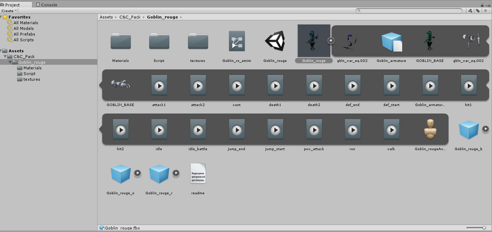
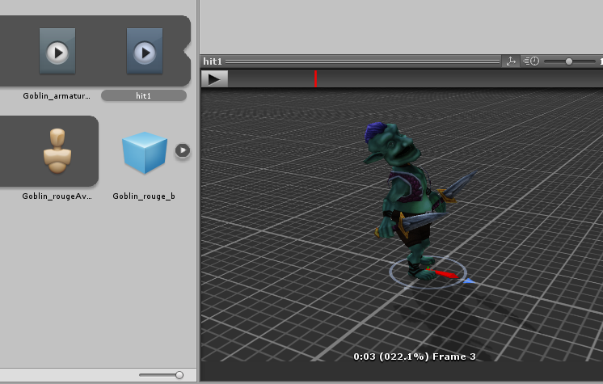
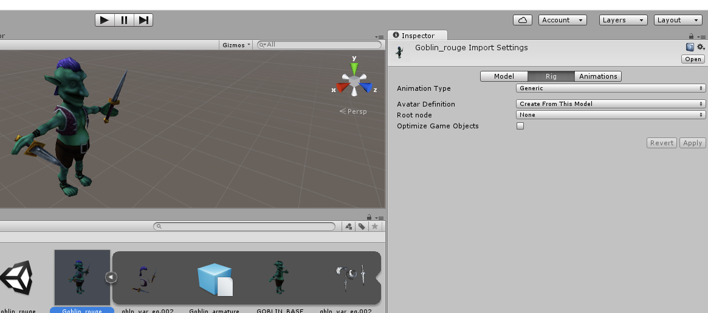
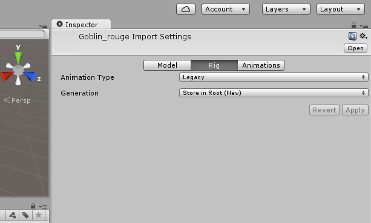

Some of the animations available are for different versions of unity, or won't work well in the game.
For these, we want to turn them to Legacy. In the Project window, click on the C&C_Pack, and then Goblin_rouge asset. Animation assets are typically stored in a .fbx file. when you find it, you can click on the little Play sign to expand it and see the animations

The Animations are the objects that have the Play button on them. When you click and select one, you'll have a window that pops up that let's your preview what the animation looks like.
.

Click on the main FBX object, which is Goblin_rouge.fbx, and look in the Inspector.

For the Animation Type, we want to select the drop down to "Legacy". Click on Apply, which may take a few minutes to process, as its converting all the animations.

Created with the Personal Edition of HelpNDoc: Qt Help documentation made easy